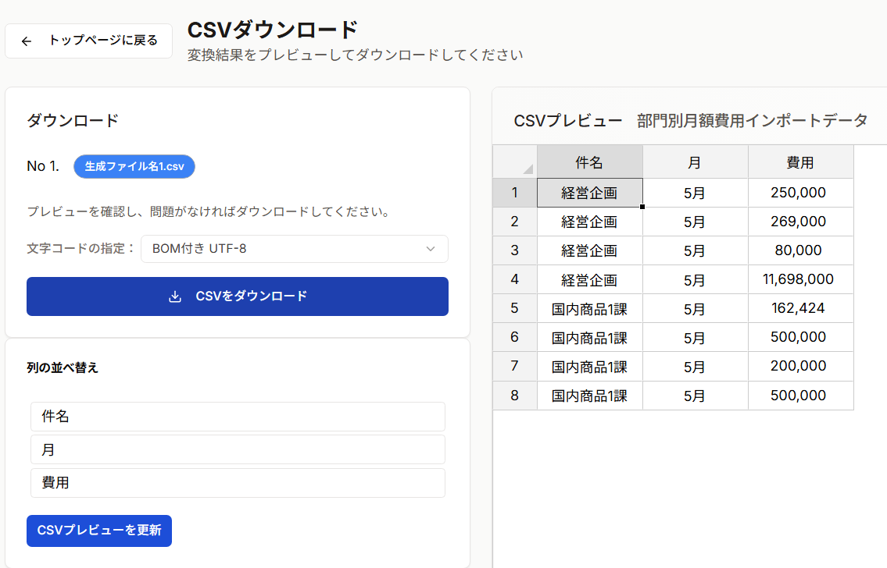

💾 CSVのダウンロード
抽出対象シートおよび適用する抽出定義の設定が完了すると「出力CSV作成へ進む」ボタンが有効になります。

📊 ダウンロード画面の構成
ダウンロード画面には以下の要素が表示されます：

- 変換元ファイル名 - アップロードしたExcelファイル名
- シート名 - 変換対象のシート名
- CSV出力パターン名 - 使用している設定の名前
- プレビューテーブル - 変換後のCSVデータのプレビュー
- エンコーディング選択 - 文字コード（UTF-8 / Shift_JIS）
- ダウンロードボタン
🎉 お疲れ様でした！ CSV変換が完了しました。さらに詳しい機能を知りたい方は、詳細設定をご覧ください。
最終更新日: 2026年1月22日